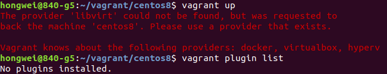
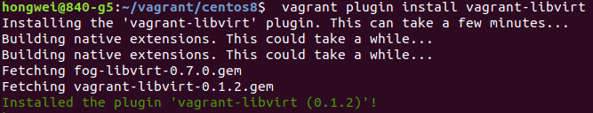
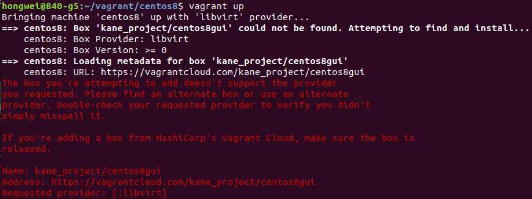
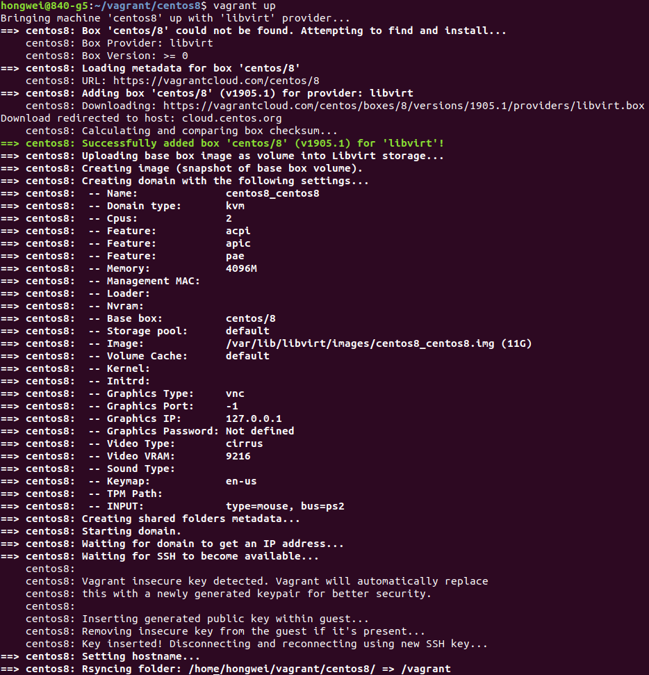
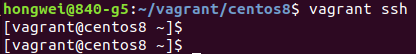
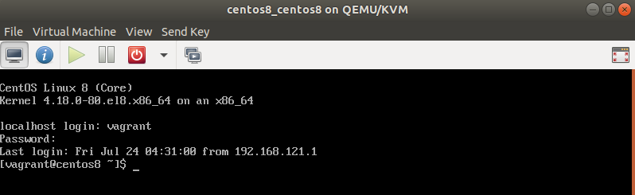

Upgrade to VirtualBox 6.1 and Vagrant 2.9.9 on Ubuntu 18.04

I needed to set up a development environment for this week’s IETF code sprint. As this was a very short term project, I would like to set up the environment in a VM. Instead of downloading Linux image, install it on VirtualBox or KVM, Vagrant is handy to use, particularly for development environment. I was thinking to get some new exeperience. Then CentOS 8 came up, as I have been using CentOS 7, but no CentOS 8 experience. And also I wanted the environment with GUI, so that I dould test my code on the VM directly.
Why to upgrade VirtualBox and Vagrant
I had VirtualBox and Vagrant on my machine(Ubuntu 18.04). So it was straight forward to boot up CentOS 8 by changing the Vagrantfile.
# -*- mode: ruby -*-
# vi: set ft=ruby :Vagrant.configure(“2”) do |config|
config.vm.box = “centos/8”
config.vm.box_check_update = false
config.vm.hostname = “centos8”
config.vm.provider “virtualbox” do |vb|
# Display the VirtualBox GUI when booting the machine
vb.gui = true
vb.memory = “4096”
vb.cpus = 4
end
end
After
Vagrant up
I could vagrant ssh to the VM and there was terminal on VirtualBox console. Everything worked well until the GUI was installed and started.
I could not get into the GUI of CentOS.
I guessed to upgrade the VirtualBox might resolve the issue, because I had VirtualBox 5.2. The latest version of VirtualBox is 6.1. So I started upgrading VirutalBox.
Upgrade VirtualBox 6.1
To install the latest version of VirtualBox, the usual way is to download the .DEB binary package simply from VirtualBox downloads page
wget https://download.virtualbox.org/virtualbox/6.1.12/virtualbox-6.1_6.1.12-139181~Ubuntu~bionic_amd64.deb
Install the package by dpkg
dpkg -i virtualbox-6.1_6.1.12-139181~Ubuntu~bionic_amd64.deb
sudo apt install -f
or apt
sudo apt install ./virtualbox-6.1_6.1.12-139181~Ubuntu~bionic_amd64.deb
Upgrade Vagrant 2.9.9
To support VirtualBox 6.1, I also have to upgrade Vagrant to 2.9.9. Again download the DEB package from Vagrant release website and install with dpkg or apt.
curl -O https://releases.hashicorp.com/vagrant/2.2.9/vagrant_2.2.9_x86_64.deb
sudo apt install ./vagrant_2.2.9_x86_64.deb
To verify that the installation was successful, run the following command which prints the Vagrant version:
vagrant --version
Install Virtualbox-dkms
When VirtualBox is upgraded, the old virtual machines might fail to open. Some error information like below:
Failed to open a session for the virtual machine xxxxxxx.
The VM session was closed before any attempt to power it on.
Result Code: NS_ERROR_FAILURE (0x80004005)
Component: SessionMachine
Interface: ISession {7844aa05-b02e-4cdd-a04f-ade4a762e6b7}
Even running the command ‘sudo /sbin/vboxconfig’ can’t resolve the issue. the dkms package needs to be reinstalled.
dpkg -l | grep virtualbox-dkms
sudo apt-get purge virtualbox-dkms && sudo apt-get install dkms
sudo /sbin/vboxconfig
Install VirtualBox Extension Pack
After the Vagrant and VirtualBox had been upgraded, unfortunately I still couldn’t make the CentOS 8 GUI working, even though I tried all the options of ‘Graphics Controller’. When I tried to connect the VM by RDP, I got an error message of no VirtualBox Extension Pack. Here is the step to install the VirtualBox Extension Pack.
Step 1
Go to the virtualbox official website and download the package.
Step 2
Double click the file, such as
Oracle_VM_VirtualBox_Extension_Pack-6.1.12
then follow the wizard to install.
Unfortunately the RDP did not show me the desktop successfully either.
Install Vagrant Plugin vagrant-libvirt
As I couldn’t make the CentOS 8 GUI working on VirtualBox with Vagrant, then I moved to Libvirt with Vagrant. But When I did ‘vagrant up’, got the below error.

It seemed that the libvirt plugin was not installed, because I installed Vagrant by DEB package, not apt. To install Vagrant Plugin vagrant-libvert, please follow the Vagrant Libvirt Provider on GitHub.
Step 1
The packages for building needs to be installed.
apt-get build-dep vagrant ruby-libvirt
apt-get install qemu libvirt-bin ebtables dnsmasq-base
apt-get install libxslt-dev libxml2-dev libvirt-dev zlib1g-dev ruby-dev
Step 2
Install the plugin. vagrant plugin install vagrant-libvirt

Non-exist Box Error
I even tried some pre-built box with GUI, but the box was gone when I used the new version Vagrant.

Terminal Mode
The pictures below show the successful terminal.
 

Links
How to Install Vagrant on Ubuntu 18.04
Install GNOME | How to enable GUI mode | RHEL CentOS 8
How to install a GUI on top of CentOS 7
Run CentOS 8 VM using Vagrant on KVM / VirtualBox / VMWare / Parallels